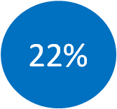
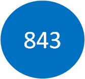

Volontariato d'azienda: impegnarsi personalmente
Social Days 2018
Nel 2018 Deutsche in Italia ha attivato un ricco programma di attività, composto da 6 progetti con 5 diverse associazioni partner, per un totale di 15 giornate di volontariato in due città italiane, a cui hanno aderito oltre 180 colleghi.
MILANO | Puliamo i graffiti della Collina dei Ciliegi | con Retake Milano
Retake Milano è un'associazione di cittadini volontari che si pone come obiettivo il miglioramento della qualità della vita attraverso interventi di riqualifica e valorizzazione dell'area metropolitana di Milano. Con questa attività di volontariato aziendale il 18 aprile, 50 dipendenti hanno preso parte al ripristino della Collina dei Ciliegi, prospiciente la Direzione Generale di Deutsche nel quartiere Bicocca, attraverso un intervento di pulizia dei graffiti, che deturpavano diverse zone del parco.
MILANO | Riqualifichiamo il Cinema Abanella di Greco | con Retake Milano
Sempre in collaborazione con Retake Milano, il 18 maggio 50 volontari di Deutsche hanno dato il proprio contributo alla pulizia di una parte dell’ex Cinema Abanella del quartiere Greco, che da qualche anno è stato riconvertito a sala prove del Teatro alla Scala.
MILANO | Una giornata al giardino botanico di Niguarda | con il Comune di Milano
Villa Lonati è un giardino botanico del Comune di Milano, con serre e spazi per la coltivazione delle piante, situato in zona Niguarda. In questo giardino vengono accolte diverse specie di piante, da quelle autoctone fino a quelle subtropicali, con finalità didattica e scientifica. Nelle giornate del 3,9 e 10 maggio, 30 volontari hanno supportato lo staff permanente in diverse attività di giardinaggio, volte a preparare gli spazi all’apertura al pubblico di Villa Lonati del 12 e 13 maggio.
MILANO | Back to School con i ragazzi di Portofranco | insieme a Portofranco Milano
In Italia, uno studente su tre abbandona la scuola prima del diploma. Solo in Lombardia sono a rischio oltre 30.000 ragazzi di cui oltre il 25% sono stranieri. Portofranco Milano contrasta questo fenomeno, offrendo aiuto gratuito allo studio, con oltre 400 volontari, e, dal 2016, anche con il supporto di Fondazione Deutsche Italia. Ben 35 volontari di Deutsche hanno supportato in prima persona, con 7 giornate dedicate, Portofranco, aiutando nello studio i ragazzi che si rivolgono all’associazione.
ROMA | Una giornata in Club House | con Itaca Onlus
Club Itaca Roma, partner della Fondazione Deutsche Italia, è un luogo di accoglienza per persone con disagio mentale, dove si insegna il reinserimento sociale attraverso il lavoro, la collaborazione e il mutuo-aiuto. Con questo progetto di volontariato, 15 volontari partecipanti hanno contribuito in maniera concreta al lavoro ordinario, con attività di giardinaggio, manutenzione e lavori in cucina.
MILANO | Raccolta abiti femminili a favore di Dress for Success | con Milano Altruista
Dress For Success è un’associazione no-profit che aiuta le donne in difficoltà economica a trovare lavoro e a gestire con successo i primi colloqui, anche fornendo un abbigliamento adatto. Con il supporto di 7 volontari, Deutsche in Italia ha organizzato, nel mese di aprile, nelle proprie sedi di Bicocca e Turati, due giornate di raccolta abiti professionali femminili a cui hanno aderito numerosi dipendenti dell’Istituto.
Social Days 2017
Nel 2017 i volontari Deutsche si sono messi a disposizione di Cometa, onlus impegnata nell’accoglienza e nell’educazione di bambini e ragazzi e nel sostegno delle loro famiglie, che dal 2009 ha anche avviato la Scuola Professionale Oliver Twist per la formazione professionale dell’artigianato “Made in Italy”.
Con questa iniziativa di corporate volunteering, i 12 volontari di Deutsche hanno avuto la possibilità di contribuire in 3 giornate al confezionamento dei pacchetti regalo per la vendita natalizia solidale organizzata da Cometa.Ogni anno infatti l’ente organizza una proposta natalizia di prodotti realizzati dagli allievi della scuola professionale per permettere ad amici e collaboratori di augurare un Buon Natale con questi prodotti.
I nostri corporate volunteers hanno così aiutato a fronteggiare l’ingente quantità di richieste giunte a Cometa per i propri prodotti natalizi.
Cometa è tra gli enti partner di Fondazione Deutsche Italia che dal 2016 sostiene in particolare la "Bottega del legno", il corso professionale di falegnameria della Scuola Oliver Twist.
Il volontariato aziendale è una componente fondamentale delle attività di corporate citizenship di Deutsche.
Dal 2011 l'Istituto promuove numerosi progetti che incoraggiano i dipendenti a mettere a disposizione il proprio tempo, le proprie conoscenze e le proprie capacità ad istituzioni educative e sociali, enti no-profit e organizzazioni di micro-finanza, a livello sia locale sia internazionale. Che si tratti di dare un aiuto pratico o di condividere il know-how e l’esperienza acquisite attraverso attività di mentoring e coaching, la si prefigge lo scopo di dare a tutti la possibilità di sviluppare ulteriormente la propria professionalità, anche oltre la propria area di responsabilità.
Negli ultimi anni sono più di 450 i dipendenti che hanno preso parte alle iniziative di volontariato aziendale. Per incentivare queste attività, Deutsche Italia permette ai dipendenti di partecipare alle attività di volontariato aziendale in determinate giornate (i social Days) in orario lavorativo. Questa è una grande scommessa da parte dell’azienda che ritiene queste iniziative importanti per lo sviluppo personale e professionale della sua forza lavoro
Negli anni abbiamo portato il nostro aiuto concreto a importanti realtà no-profit del territorio tra cui: il Banco Alimentare, presso i magazzini di raccolta e smistamento delle eccedenze alimentare; CAF Onlus, presso la casa famiglia di Milano; e L’Opera di San Francesco per i Poveri, presso il centro di prima accoglienza per le persone bisognose.
Social Days 2015
Il 2015 è stato un anno particolarmente ricco di attività: sono partiti progetti con 4 diverse istituzioni, che hanno coinvolto più di 200 colleghi per un totale di 40 giornate. Le associazioni coinvolte: Sodalitas, Opera san Francesco per i Poveri, la Comunità di Sant’Egidio e il Banco Alimentare.
Volontari per un giorno @EXPO con Sodalitas. Tramite Sodalitas, per 26 lunedì da 4 maggio al 26 ottobre, i dipendenti dell’Istituto hanno prestato servizio di volontariato supportando i numerosi visitatori dell’Esposizione, in particolare le categorie che richiedono un’attenzione speciale, come i disabili, le famiglie con bambini. L’esperienza, centrata sulla condivisione, l’aiuto e l’incontro con culture diverse ha coinvolto più di 100 colleghi.
Opera di San Francesco per i poveri. Da Aprile a Novembre, una volta al mese i nostri dipendenti si sono recati al centro di prima accoglienza aiutando lo staff con le attività di tutti i giorni. Inoltre, all’interno degli uffici di Milano Bicocca e Turati, sono state organizzate due raccolte di abiti usati da donare all’opera di San Francesco.
Comunità di Sant'Egidio. La Comunità di Sant’Egidio nasce nel 1968 e da allora si occupa di supportare le persone più svantaggiate in tutto il mondo (è presente in 70 paesi del mondo). I nostri volontari si sono recati nel centro Sant’Egidio di Milano dove hanno dato il loro supporto allo staff della Comunità nello svolgimento delle attività di tutti i giorni e tenuto compagnia agli ospiti.
Banco Alimentare. Forti di una collaborazione portata avanti da diversi anni, nel 2015 sono state organizzate tre giornate di volontariato nel magazzino delle sedi di Milano, Torino e Roma. Inoltre, presso le sedi di Milano Bicocca, Milano Turati e Roma SS. Apostoli è stata organizzata una raccolta di alimenti a favore del Banco Alimentare.
Social Days 2014
Nel 2014 27 volontari si sono messi a disposizione di Opera San Francesco per i Poveri, che si occupa di aiutare e sostenere chi vive per strada o chi non ha mezzi sufficienti per vivere, attraverso il proprio centro di prima accoglienza di Milano (mensa, docce, guardaroba, centro raccolta, accettazione e ambulatorio, area sociale). I dipendenti sono stati coinvolti in diverse attività presso la mensa dei poveri, che accoglie ogni giorno fino a 1.800 persone in stato di bisogno. Proprio i volontari costituiscono le colonne portanti di OSF, autentici collaboratori e amici che, con la loro generosità in termini di tempo, fatica, entusiasmo e professionalità, sostengono lo spirito di chi vive ogni giorno a contatto con la povertà e la sofferenza.
Sempre nel 2014, alcuni volontari hanno prestato servizio presso il CAF (Centro di Aiuto al Bambino Maltrattato e alla Famiglia in Crisi), già destinatario del contributo dei nostri dipendenti nel 2011.
Social Days 2013
Nel 2013 Deutsche ha lanciato due progetti, uno in collaborazione con AIBE, Milano altruista e l’altro con Banco Alimentare.
Nell’ambito del progetto “Orto didattico con MilanoAltruista” alcuni dipendenti si sono occupati di riqualificare uno spazio verde all’interno del Comune di Milano. L’iniziativa, organizzata da AIBE (Associazione Italiana delle Banche Estere) e supportato anche da BNP Paribas, Citibank e Credit Suisse, ha voluto creare un luogo di aggregazione sociale e un laboratorio didattico all’aria aperta a beneficio del quartiere e delle scuole adiacenti. I partecipanti hanno potuto condividere momenti per lavorare, sperimentare e apprendere informazioni e messaggi educativi sull’ambiente, l’ecologia e la sostenibilità, partecipando attivamente a tutte le attività relative al mantenimento di un orto, quali ad esempio la concimazione, rimozione di erbe infestanti, realizzazione di aiuole, semina, potazione di piante e così via. MilanoAltruista è un’associazione specializzata nella promozione delle attività di volontariato sul territorio milanese che si occupa di mettere in contatto associazioni volontariato con possibili volontari per andare incontro ad entrambe le parti nella scelta delle iniziative.
Un altro progetto che ha generato molto entusiasmo tra i nostri dipendenti è stata la collaborazione con il Banco Alimentare. La Fondazione Deutsche Italia sostiene Fondazione Banco Alimentare Onlus nella sua missione di recupero e ridistribuzione delle eccedenze alimentari alle persone meno fortunate, attraverso diverse iniziative di solidarietà e di coinvolgimento diretto dei dipendenti. Nel 2013 in cinque città italiane i dipendenti hanno prestato assistenza in alcune attività operative di smistamento e preparazione degli alimenti, selezione e censimento dei prodotti donati dai supermercati, preparazione delle bolle di consegna per le strutture caritative e preparazione dei pallet. In totale, sono state svolte 378 ore di volontariato. Inoltre è stata attivata una raccolta di alimenti presso la Direzione Generale di Deutsche a Milano, che ha permesso all’Istituto di donare oltre 500 chili di vari prodotti a lunga conservazione come olio, riso, pasta, latte in polvere e legumi, destinati dal Banco Alimentare alle strutture caritative della Lombardia.
Social Days 2012
Nel 2012 Deutsche ha portato avanti un progetto con Archè, un’ONLUS nata nel 1991 per dare risposta al disagio sociale grave di bambini e famiglie, causato dai primi casi di sieropositività infantile. Lo scopo è quello di restituire un progetto di vita autonomo ai bambini e alle loro famiglie che, a causa del disagio psichico o sociale, hanno perso il diritto all'accoglienza, alla felicità, al rispetto, alla relazione, all’assistenza. Il progetto “Deutsche Bank corre per i Bambini”, la prima iniziativa di Deutsche Italia è diretto a raccogliere i fondi necessari per consentire alla Fondazione Arché di adottare 3 nuclei familiari per un periodo di circa un anno. L’iniziativa è stata ispirata e stimolata dalla partecipazione di un dipendente dell’Istituto alla “Ultra Trail du Mont Blanc”, una corsa di una settimana intorno al Monte Bianco organizzata per sostenere e diffondere proprio le attività di Arché. Fondazione Arché ha ricevuto una donazione di circa 100mila euro, composta dal totale delle donazioni realizzate dai dipendenti di Deutsche, raddoppiata dal contributo diretto dell’Istituto. Questo importante risultato ha permesso di supportare “Casa Arché”, la casa-famiglia dove fino a 18 persone, tra mamme e bambini, sono ospitate e assistite 365 giorni l’anno, 24 ore su 24, da una équipe di cinque educatori, coordinata da un responsabile e supervisionata da un neuropsichiatra infantile.
Social Days 2011
Il progetto dei Social Days è iniziato nel 2011, quando i dipendenti di Deutsche delle sedi di Milano e Lecco hanno dedicato il loro tempo ad aiutare la CAF (Centro di Aiuto al Bambino Maltrattato e alla Famiglia in Crisi). Sono state due le giornate dedicate, una a giugno e una a Novembre. Durante la prima giornata quattro gruppi di volontari si sono occupati di: sistemare il giardino dei bambini, potando le siepi e pulendolo dalle erbacce; riordinare la cantina, che raccoglie diverso materiale per l’attività didattica; pulire le stanze interne che ospitano i bambini; preparare il pranzo ai piccoli ospiti del Centro e ai colleghi. In ricordo dell’evento è stata piantata una magnolia nel giardino dell’Associazione.
La seconda giornata invece, svoltasi presso due sedi del CAF ha coinvolto i colleghi nell’impacchettamento dei regali di Natale destinati ai sostenitori del Centro, in occasione dell’annuale vendita di beneficenza di panettoni, pandori e scatole di tè promossa per raccogliere fondi. In entrambe le occasioni un altro team si è occupato di preparare il pranzo a bambini e colleghi.
Volontariato aziendale nel mondo
Il volontariato aziendale è una componente molto importante di Deutsche.
Dei dipendenti Deutsche ha preso parte almeno una volta ad un progetto di volontariato.

I progetti partiti nel 2015.
Per saperne di più sui nostri valori e il volontariato in Deutsche clicca qui (contenuto in inglese).